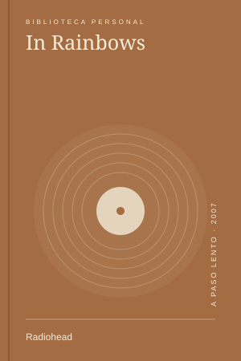
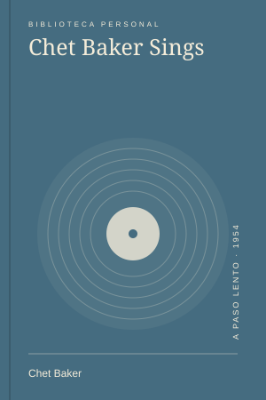
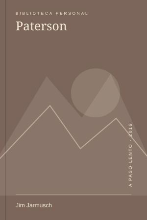

El silencio tiene forma de montaña
Hay caminos que no llevan a un lugar: te devuelven a una forma de estar. Una mañana en El Chaltén.
Las 23 notas que se conectan con 2026.
Hay caminos que no llevan a un lugar: te devuelven a una forma de estar. Una mañana en El Chaltén.


Una taza, una pausa y un libro que recuerda que la belleza no necesita hacer ruido.

Dejar el teléfono en otra habitación no cambia la vida. Pero cambia bastante una mañana.

MúsicaVolver a escuchar In Rainbows como si todavía no supiera qué canción viene después.
Un mes cabe mejor en unas pocas imágenes que en una lista de cosas terminadas.
Archivos simples, enlaces que funcionan y una pequeña reivindicación de la web personal.
 Cine
CineUna película que no confunde una vida pequeña con una vida vacía.
 Lecturas
LecturasUna invitación a salir que encontré, paradójicamente, sentado en una silla.
Una salida imaginaria hacia Laguna de los Tres, con mucho viento y ninguna urgencia.
 Series
SeriesLa amistad, el paisaje y esas búsquedas que terminan hablando de otra cosa.
Cruzar cerca para mirar distinto: una tarde sin itinerario en la Ciudad Vieja.
El aire de la mañana y una ruta conocida que nunca es exactamente la misma.
No hace falta un ritual perfecto. Hace falta estar un momento en el lugar donde estamos.
Salir con una cámara y volver con más preguntas sobre la luz que fotos.
 Lecturas
LecturasVolver a Virginia Woolf para pensar el espacio, el tiempo y las condiciones de crear.

MúsicaUn proyecto pequeño: guardar lugares por lo que hicieron sentir, no por su puntuación.
Los números son una buena herramienta, siempre que no los confundamos con la experiencia.
Las herramientas que uso menos son, a veces, las que mejor me acompañan.
Una historia ficticia sobre las cosas ordinarias que terminan guardando una vida.
 Lecturas
LecturasLeer una vida retirada sin creer que hace falta copiarla.
Subir despacio para que el paisaje no llegue antes que nosotros.

CineUna libreta, una ciudad y la idea de que crear puede ser una parte discreta de la vida.